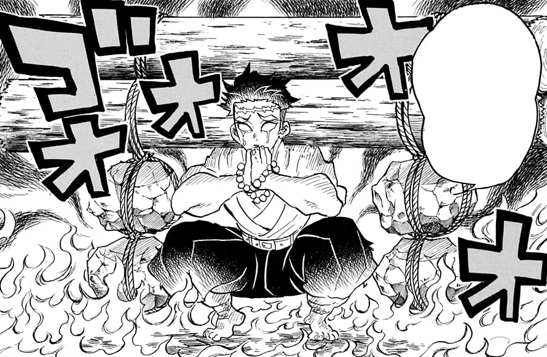
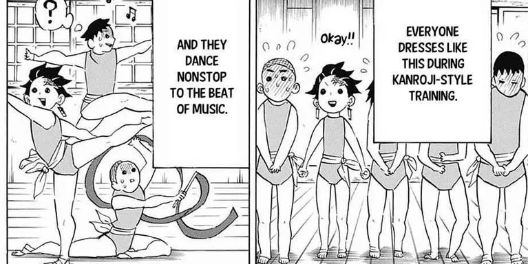
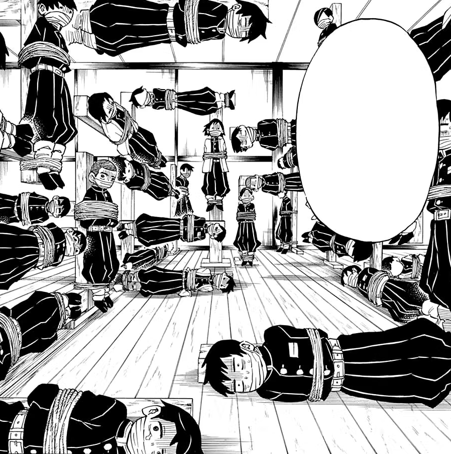
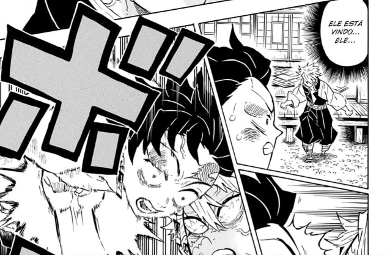

Desvende o Treinamento dos Poderosos Hashiras em Demon Slayer!

O novo filme "Kimetsu no Yaiba: To The Hashira Training" ofereceu aos fãs uma visão mais profunda do mundo dos Hashiras, a elite dos Caçadores de Demônios. Nele, testemunhamos as habilidades impressionantes de Sanemi Shinazugawa, o Hashira do Vento, e Obanai Iguro, o Hashira da Cobra, em batalha contra hordas de demônios.
Treinamento Especializado: Descubra os Desafios Enfrentados pelos Aprendizes dos Hashiras
Cada membro do alto escalão assume a responsabilidade de treinar os espadachins em áreas específicas que são essenciais para sua sobrevivência e sucesso na batalha:
Resistência
Tengen Uzui: Antigo Hashira do Som - Liderando o treinamento de resistência, Tengen submete os aprendizes a exercícios exaustivos para aumentar sua resistência e força.
Velocidade
Muichiro Tokito: Hashira da Névoa - Muichiro, responsável pela morte da Lua Superior Cinco, foca em aprimorar os reflexos e a velocidade dos aprendizes para torná-los mais ágeis e precisos em combate.
Reforço Muscular
Gyomei Himejima: Hashira da Pedra - Gyomei conduz um treinamento intensivo de fortalecimento muscular, visando preparar os aprendizes para executar técnicas poderosas.
Flexibilidade
Mitsuri Kanroji: Hashira do Amor - Uilizando seu conhecimento em balé, Mitsuri lidera o treinamento de flexibilidade, desafiando os aprendizes a esticar seus limites físicos para alcançar a flexibilidade necessária em batalha.
Habilidades com Katana
banai Iguro: Hashira da Cobra - Com seu treinamento assustador e desafiador, Obanai foca em aumentar os reflexos, precisão e capacidade de defesa dos aprendizes.
Treino de Força
Sanemi Shinazugawa: Hashira do Vento - Sanemi lidera um treinamento brutal de resistência e força, desafiando os aprendizes a defenderem-se de seus ataques incessantes.
Além disso, Shinobu Kocho, a Hashira dos Insetos, desempenha um papel crucial ao preparar venenos para a batalha final, enquanto Giyu Tomioka opta por se isolar, recusando-se a participar do treinamento, apesar dos apelos do grupo.
Embora o arco do Treinamento dos Hashiras possa ser mais contido em termos de batalhas, sua importância na preparação para a batalha final no Castelo Infinito não pode ser subestimada. Este treinamento não apenas fortalece os corpos dos aprendizes, mas também forja sua determinação e espírito de luta para os desafios que estão por vir.